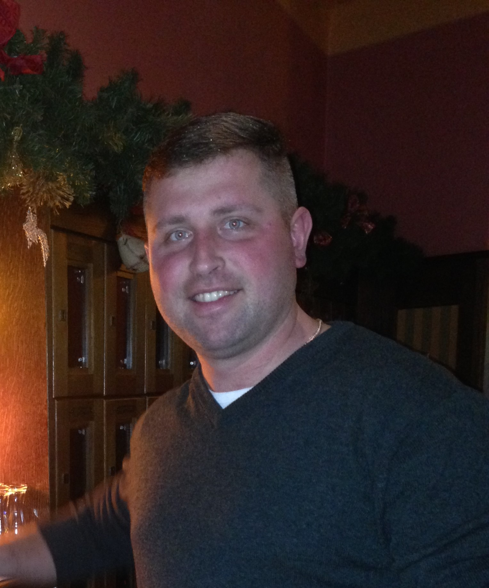

Have solid experience with telecommunication systems (cellular networks). Olso have some basic knowledge in core Java. I am a sportsperson who has achievements in Ukrainian competitions “Iron games” (2012y.) in powerlifting (2 gold medals). As “trainee developer” can repair computers and phones. Have driver license cat.B
Experience:
Junuary2021
- current time - Working on creating site for Ukrainian painter using such technologies as: HTML5, CSS.
2017 – Іntertelecom (www.intertelecom.ua)
Head of the Technical Department of using network.2013 – 2017 - Іntertelecom (www.intertelecom.ua)
Position: Base Technical System Engineer
Duties:
- Using and changes configuration “Lucent-Alcatel”;
- Mount electrical equipment;
- Detection and elimination of the functionality of equipment;
- Emergency services;
- Renovation programing
- Performing work with increased safety at altitude.
2012 Cdma Ukraine (www.cdma.ua) ;
- 2012-2013 – Engineer of the 1 stage Technical department CDMA Ukraine (www.cdma.ua) ;
- 2010 - 2012 – Head leader of the Technical department NSS;
- 2008 - 2010 – An Engineer of the Technical department CDMA Ukraine (www.cdma.ua) ;
- 2006 - 2008 - An Engineer of the Service department CDMA Ukraine (www.cdma.ua) ;
Duties:
- Huawei M800 equipment, UMG8900, SoftX 3000, BSC6600;
- Monitoring and maintenance of control systems.
- Preparation of reporting and correction of inconsistencies of work of equipment and services;
- Change of existing and introduction of new voice services;
- MSC/HLR operation and maintenance;
- Renovation of programing;
- Emergency services;
- Analysis and identification of problems communication between MSC/MSC, MSC/HLR (CCS No7) ;
- Monitoring and analysis using a service system (PRA);
- Mount and start BTS Huawei 3601,3606,3606E (BTS).
- Phone : +380 98 456-52-52 ;
- Date of birth : January 16, 1983 ;
- E-mail : valdimarr83@gmail.com ;
- GitHub : volodymyr1402 ;
- Skype : 0637185717 ;